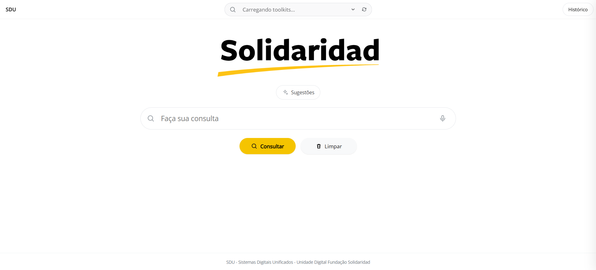
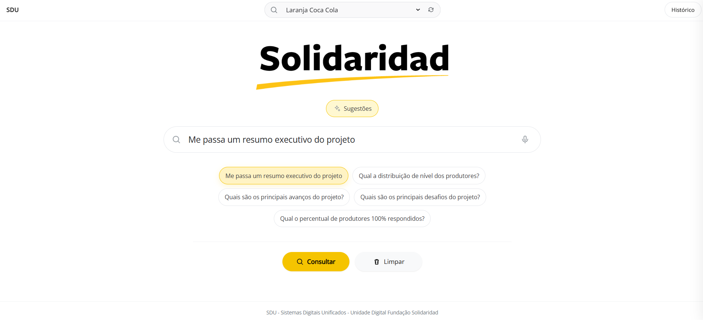
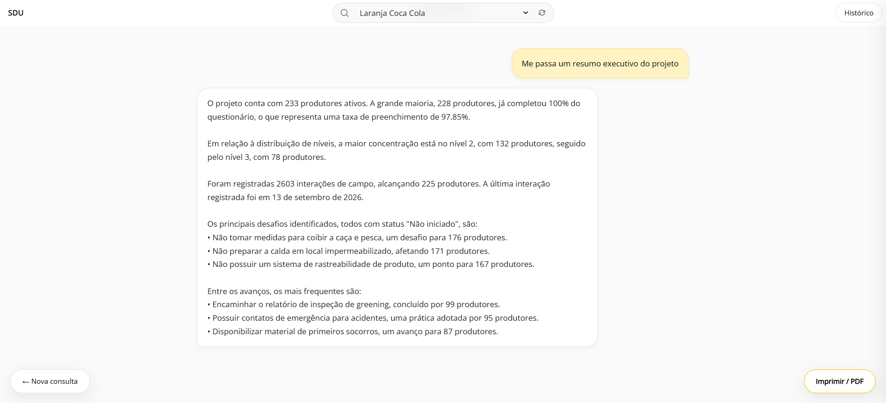
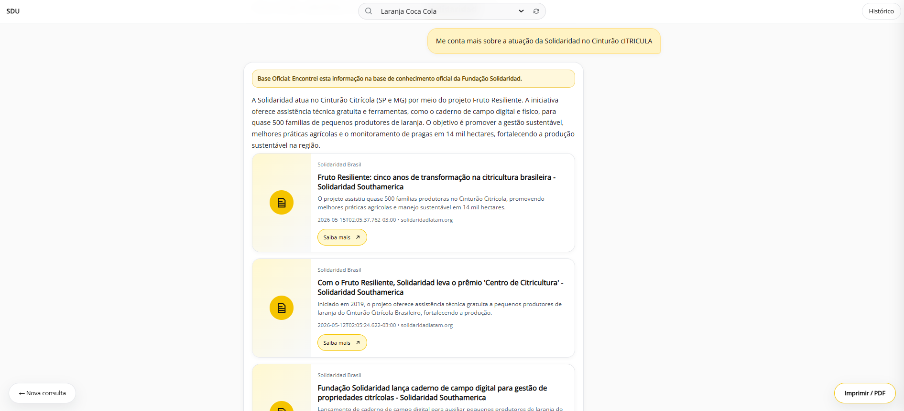

01 /RAÍZEN
RAÍZEN
PROGRAMA ELOS
Inteligência de campo e indicadores operacionais em um produto de BI em evolução.
BUSINESS INTELLIGENCEBRAZIL / AGRIBUSINESS
DATA / BI / AI · SÃO PAULO, BRAZIL
Business Intelligence, Data Engineering & Artificial Intelligence.
Transformando problemas de negócio em produtos de dados e dados em decisões.
Produtos de Business Intelligence e dados para operações, cadeias produtivas e decisões em diferentes contextos.
Inteligência de campo e indicadores operacionais em um produto de BI em evolução.
Acompanhamento de produtores e propriedades de citros com indicadores de campo.
Visão analítica de produtores, propriedades e produção de café no México.
Dados para acompanhar iniciativas em cadeias produtivas da Amazônia.
Rastreabilidade e análise de cadeias produtivas para o contexto EUDR.
Indicadores de desenvolvimento de pequenos negócios apresentados em BI.
Perfil e indicadores para iniciativas ligadas ao óleo de palma.
Dados, produtos digitais e inteligência de negócio aplicados a diferentes países, cadeias produtivas e contextos.
A Central Digital SDU reúne consulta e interpretação de dados e conhecimento dos projetos por meio de perguntas em linguagem natural.




Analista de Business Intelligence na interseção entre dados, negócio e tecnologia. Meu trabalho começa com o problema e termina quando a informação ajuda alguém a decidir.
TRADUZO NEGÓCIOS EM DADOS. E DADOS DE VOLTA EM NEGÓCIOS.TRADUTOR DE DADOS.